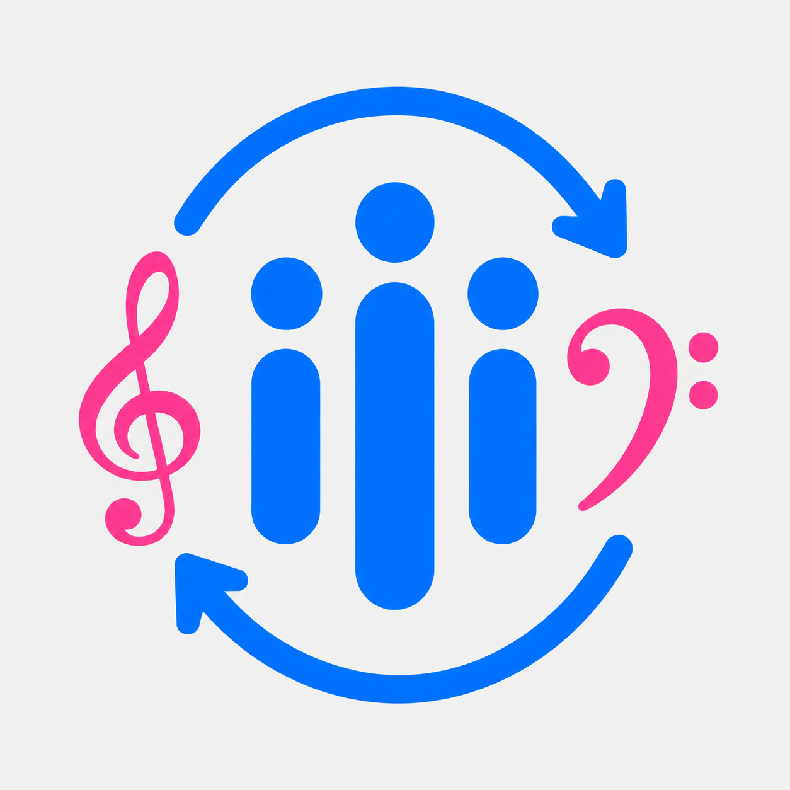

LineupSyncEmail confirmed
Your email address is verified. You can now sign in to LineupSync.
Open LineupSyncDon't have the app on this device? Open this page on your phone, or just sign in from the LineupSync app.

LineupSyncYour email address is verified. You can now sign in to LineupSync.
Open LineupSyncDon't have the app on this device? Open this page on your phone, or just sign in from the LineupSync app.